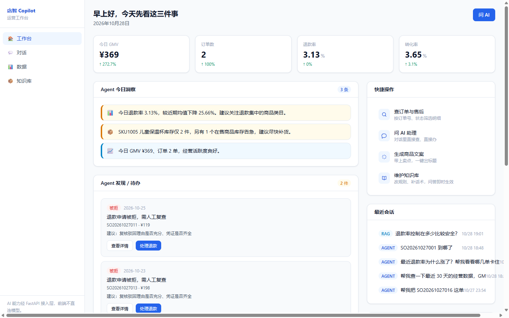
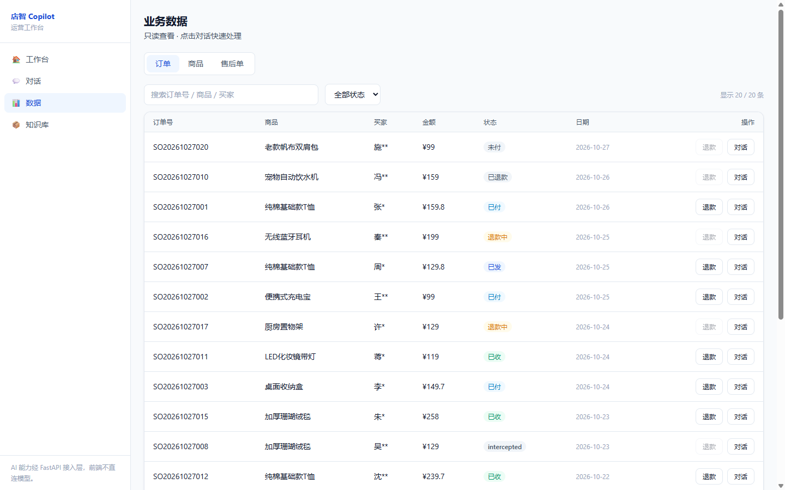
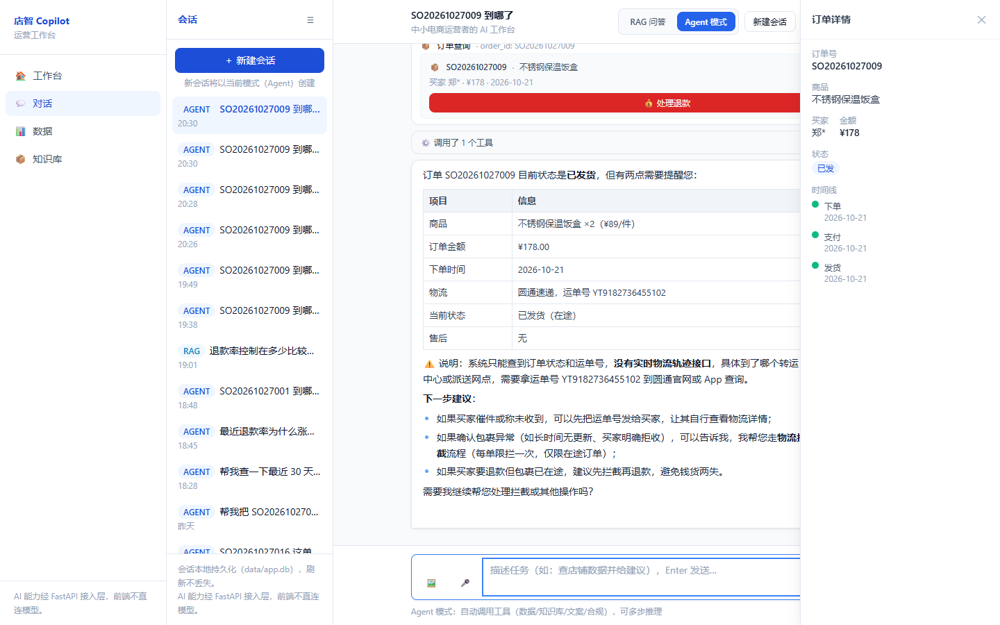
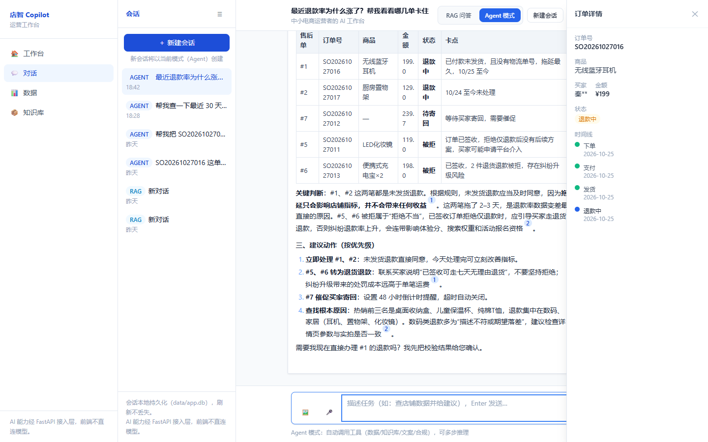
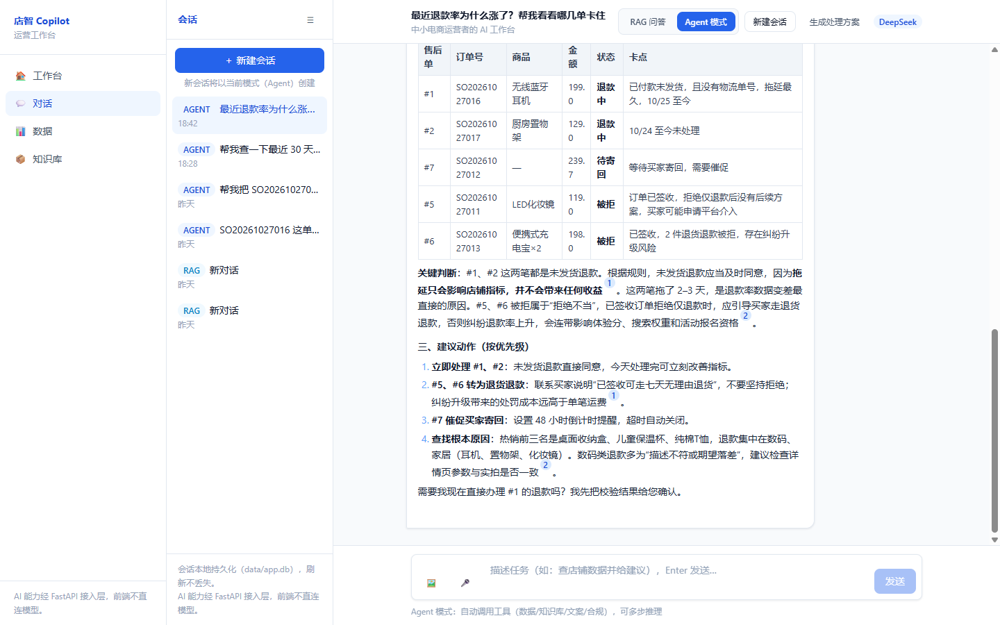
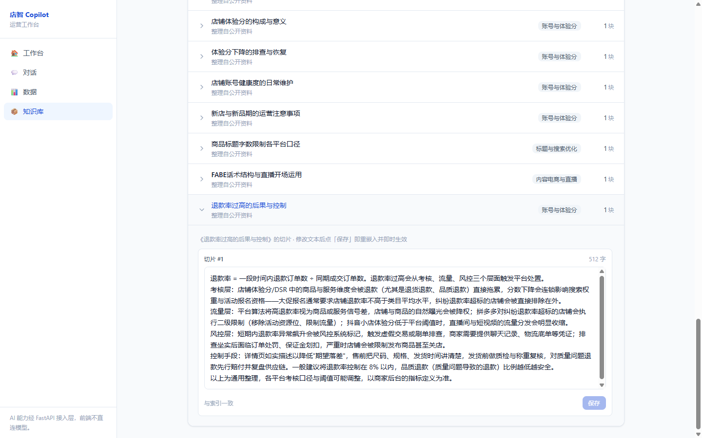

中小电商运营者的 AI 工作台
看数据 · 查订单 · 处理售后 · 查规则 · 写文案
团队信息：邢博、刘庆昊、孔克铮 / 河北传媒学院 / 人工智能
把看数据、查订单、处理售后、查平台规则、写商品文案收进一个对话框。不是只会聊天的问答工具，而是能调用工具、能校验、能溯源的工作台。
店智 Copilot 面向中小电商运营者，解决日常运营中“后台多、表格散、规则更新快、售后操作风险高”的问题。系统把高频工作收进四个入口：
项目自带 20 单模拟订单和 43 篇知识库语料，不依赖真实平台授权。启动方式：
pip install -r backend/requirements.txt
cp backend/.env.example backend/.env
# 填入 DEEPSEEK_API_KEY
python -m backend.app.rag.pipeline build
uvicorn backend.app.main:app --port 8000
另一个终端：
npm install
npm run dev
打开 http://localhost:3000，按“工作台 → 数据 → 对话查订单 → 退款校验 → RAG 问答 → Agent 工具调用”的顺序即可完成演示。


不是只会聊天的问答工具，而是能办事的工作台
查单、看数、退款校验、规则问答、文案生成都在同一个对话里完成。
意图路由，不是所有问题都走向量检索
knowledge / general 走 RAG；data / policy / copywriting 走 Agent。界面用 chip 显示“数据查询 → Agent”等判断结果，用户知道系统为什么切模式。
RAG 回答带 [1][2] 角标，来源可点开核对
回答不是“模型凭印象说”，而是先检索知识库，再把命中的文档片段拼进上下文。点角标能看到标题、分类和原文片段。
Agent 过程透明
手写 ReAct 循环，最多 5 步；每次工具调用都以步骤卡展示“调了什么工具、花了多久、返回什么”。目前注册 10 个工具，覆盖知识检索、数据查询、文案、合规、订单、退款、改地址、物流拦截、退换货。
敏感操作两段式门控
退款、改地址、物流拦截等操作统一走 validate → 用户确认 → execute。模型不能直接动钱；校验不通过时直接列出原因，例如“订单已超过 7 天售后期，无法自助退款”。
知识库编辑即生效
修改切片后重新嵌入，旧检索立即失效，下一次提问就能看到新口径，不需要重启服务。
真实数据可插拔
DataProvider 协议把数据源和 Agent 解耦，默认 SQLite 种子库，也可以接 MySQL、ERP API 或 CSV。
安全边界清楚
前端永远不直连模型 API；DeepSeek Key 只放在 Python 层 backend/.env，所有 AI 请求走 FastAPI。


项目把 AI 能力拆成可复现的测试对象，不只靠人工点页面：
| 测试层 | 内容 | 结果 |
|---|---|---|
| 静态检查 | tsc、eslint、next build |
全部通过 |
| 接口冒烟 | 7 个接口 + 4 个页面，双服务联调 | 11/11 通过 |
| API 契约 | 会话、退款、知识库、意图等接口 | 12/12 通过 |
| RAG 检索自测 | 10 个查询，top-3 命中 | 9/10 = 90% |
| RAG 效果评测 v1 | 20 题、40 分制、有/无 RAG 对照 | 26 vs 23 |
| RAG 效果评测 v2 | 15 题、30 分制、有/无 RAG 对照 | 29 vs 30 |
v2 的结果没有刻意美化：通用常识题上，不带 RAG 的模型本身也能答对，所以无 RAG 反而 30/30；有 RAG 29/30。这说明 RAG 的增量主要在平台私有规则、知识库口径、引用可溯源，而不是所有题都靠检索。测试还暴露并修复了一个真实问题：早期 RAG 注入只截取 chunk 前 300 字，FABE 示例恰好落在 300 字之后，导致回答缺证据；改为完整原文后恢复得分。
另外还覆盖了：
general，不阻断对话。order_lookup、data_query、refund_flow validate/execute 等。/v1/rag/search 同源核对。测试脚本可复现：
node scripts/smoke.mjs
python -m backend.app.rag.selftest
python -m backend.app.rag.eval
python -m backend.app.rag.eval_v2

/v1/rag/search 同源。step/delta/done/error。/api/* 代理；.env 不入库。smoke.mjs、Pytest 风格接口脚本、RAG selftest、v1/v2 评测集、意图分类用例。
本文档使用 6 张真实运行截图：
[1] 来源卡（图 5）。截图均来自本地演示数据，不含真实客户信息、API Key 或 .env 内容。
截至本次提交，本项目未公开发表、未参加其他比赛、未获奖。
如团队有其他相关获奖或发表，请在此处补充；没有则保留本段。
本项目为原创开发，不是基于其他参赛项目或代码库二次开发。项目使用 Next.js、FastAPI 等开源框架和官方脚手架初始化；方案调研阶段参考了公开电商 RAG / Agent 项目的架构思路，但业务代码、演示数据、页面设计、工具实现和评测脚本均为自研。
如实际参考了某个具体开源仓库的代码，请补充仓库名、许可证和复用范围；没有代码复用则保留本段。